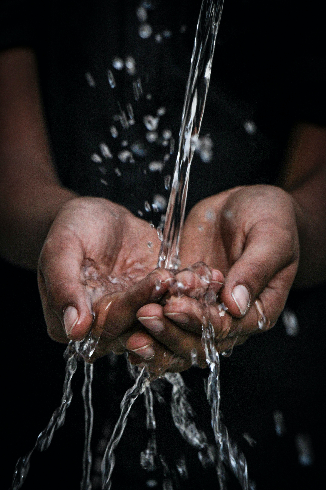

Ein paar Zachen dass Lebens gesund machen.
Wenn man gesund bleiben möchte soll er viel Sport treiben. Das ist: bewegen für Minimum 150 Minuten täglich. Man muss nicht ein Leitungssport treiben. Spazieren ist auch gut.

Man soll viel an der frischen Luft bleiben. Außer dem soll man nicht zu lang sitzen, weil es nicht gesund für Wirbelsäule ist.
Außer Sport Erhärtung spielst eine große rolle in gesunde Leben. Es ist sehr wichtig Obst und Gemüse zu essen weil diese Lebensmitteln geben man viele wichtige Nährstoffe.
Man soll viel Wasser trinken, weil sie spielt eine große rolle in den Menslicher Körper.
Gesund Essen ist sehr wichtig, weil es man nicht feet zu sind hilfst, und dass reduziert Chance Herz Probleme zu haben.

Wann man gesund bleiben möchte darf er auf keinen fall nicht rauchen oder Alkohol trinken, weil diese Genussmitteln mansche Gesundheitsprobleme bewirke.
Für die Letzte zache, man soll über gesättigte Gesundheit merken. Es ist sehr wichtig zu seit für sich entspannend haben. Außerdem soll man viel mit anderen chatten, weil es stress reduzierst.
Und vor allem soll man nicht zu viel sich stressen, weil es sehr ungesund ist und kann ernsthafte Gesundheitsprobleme merken.